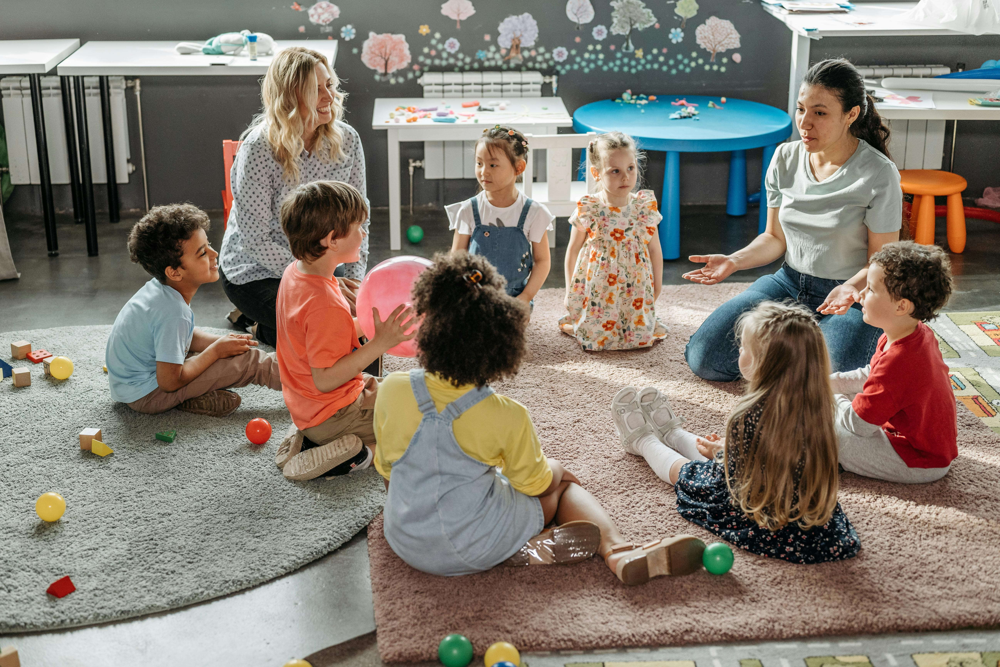

Welcome to Creative Curriculum

Early childhood education is all about creativity. It helps children express themselves, explore their surroundings, and solve problems in imaginative ways. Creativity in the early years is not limited to the arts—it encompasses curiosity, exploration, innovation, and play across all learning domains. Guided well, creativity supports cognitive, emotional, social, and physical development, helping children become confident, capable learners.
Early childhood educators play a critical role in nurturing creativity by creating open-ended, stimulating environments where children can experiment and explore. Educators can incorporate creativity through thoughtful planning and responsive teaching across all learning areas—from visual art and drama to science and numeracy. Such opportunities should be developmentally appropriate and culturally responsive, aligned with the strengths, interests, and needs of individual children.
Creativity and play are deeply connected. Play-based learning gives children opportunities to manipulate materials, test ideas, and think critically. Educators can support this by offering diverse experiences that inspire imagination. For example, dramatic play encourages role-playing and storytelling, while open-ended materials like clay, loose parts, or digital tools allow for creative planning and construction.
Creativity theories, such as Vygotsky’s sociocultural theory, highlight the importance of social interactions and scaffolding in creative development. Vygotsky believed creativity thrives in meaningful collaboration with others. Similarly, Howard Gardner’s theory of Multiple Intelligences reminds us that children express creativity in diverse ways—through music, movement, language, art, logical reasoning, and relationships. Valuing this diversity helps build a rich, inclusive curriculum.
Modern interdisciplinary approaches such as STEM (Science, Technology, Engineering, Mathematics) and its variations—STEAM, STREAM, STEM IE—promote creativity as a driver of innovation. These models help children make connections across domains, think flexibly, and work collaboratively to solve real-world problems.
For creativity to flourish, educators must be reflective, responsive, and resourceful. Integrating digital technologies meaningfully—like using tablets for digital storytelling, music apps for sound exploration, or coding games for logic and design—enhances creative learning. Strong relationships with families and communities further enrich learning experiences by making them more relevant and culturally grounded.
Each page on this site explores how creativity can be embedded into different curriculum areas with practical examples and theoretical insights. You'll find age-appropriate learning experiences, aligned with research and the principles of the Early Years Learning Framework (EYLF) and the Australian Curriculum.
Creativity must be nurtured as a necessity, not a luxury. It equips children with essential life skills—curiosity, resilience, communication, and innovation—laying the foundation for lifelong learning and success.